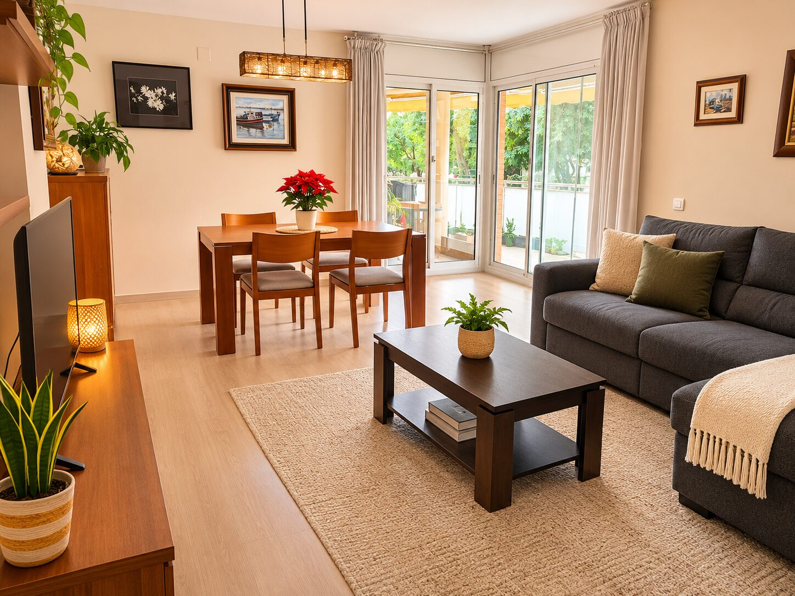
Quatre habitacions i una gran terrassa, a 15 minuts de la platja
En una zona residencial i tranquil·la, a quinze minuts caminant de la platja. Pis ampli i lluminós, orientat a sud-oest, amb vistes al jardí, a la piscina i al parc. Cuina nova, bany de la suite reformat, pàrquing i traster inclosos.
- A 15 min a peu de la platja
- Cuina nova (2026)
- Terrassa de 29 m²
- Recinte amb piscina i jardí
- Pàrquing i traster al mateix edifici
- 144 m²construïts
- 4habitacions
- 2banys
- 29 m²de terrassa
- 1aplanta amb ascensor
- Sud-oestorientació
Espai per viure-hi de debò
Un saló-menjador de quasi 25 m² obert a la terrassa, una cuina acabada d'estrenar i quatre habitacions, la principal amb bany propi.
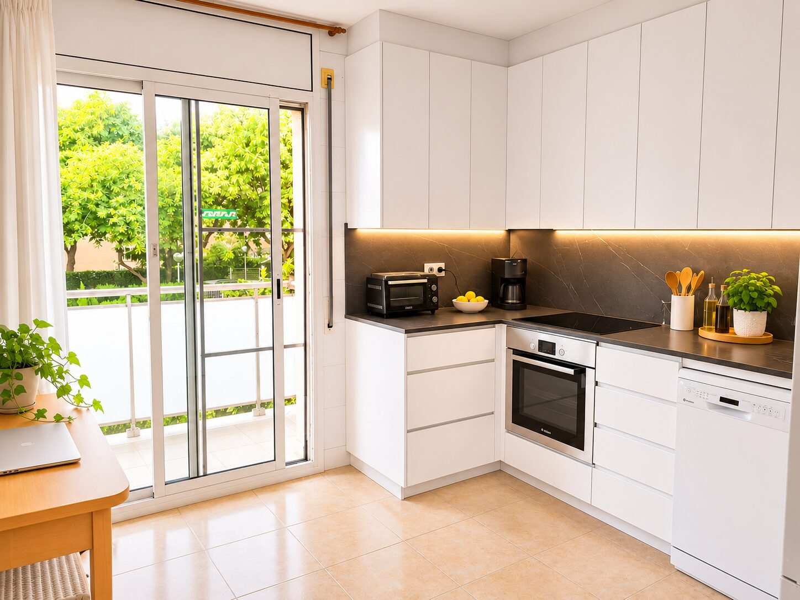
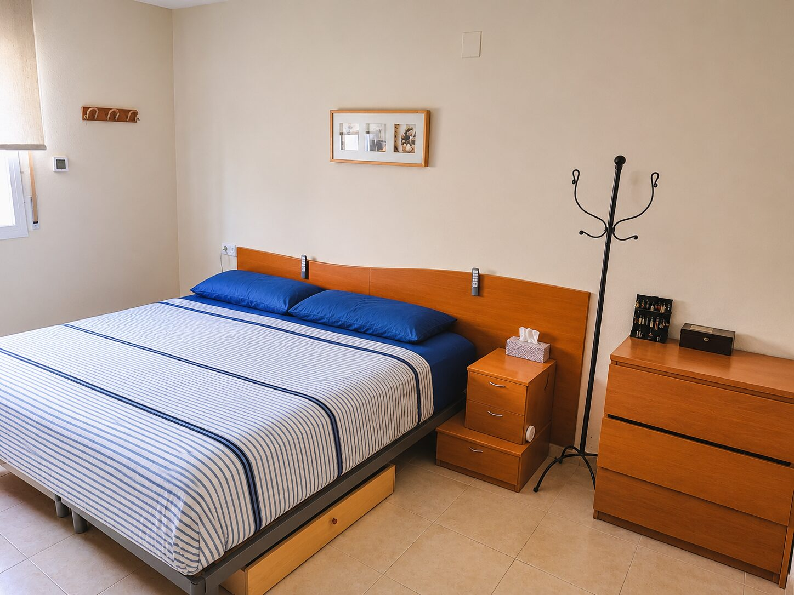
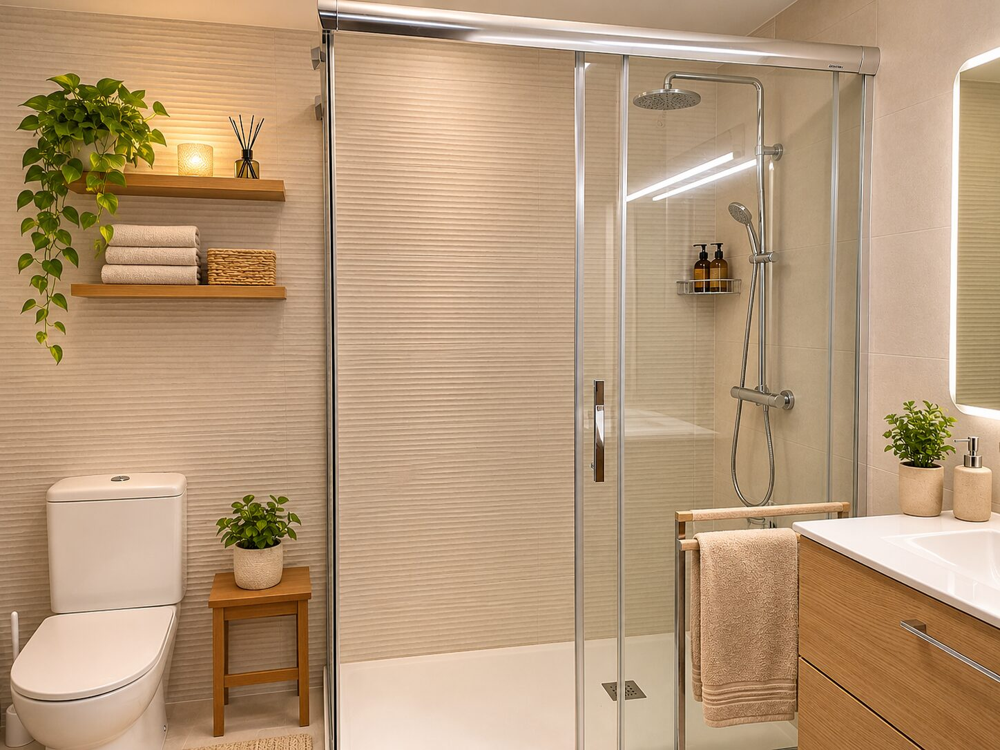
Una sala d'estar a l'aire lliure
29 m² de terrassa que envolta el saló, orientada a sud-oest: sol a la tarda, llum tot l'any i vistes al verd.
- Vistes al jardí i a la piscina del recinte
- Vistes al parc públic
- Espai per a taula, butaques i plantes
- Tendal i baranes de vidre
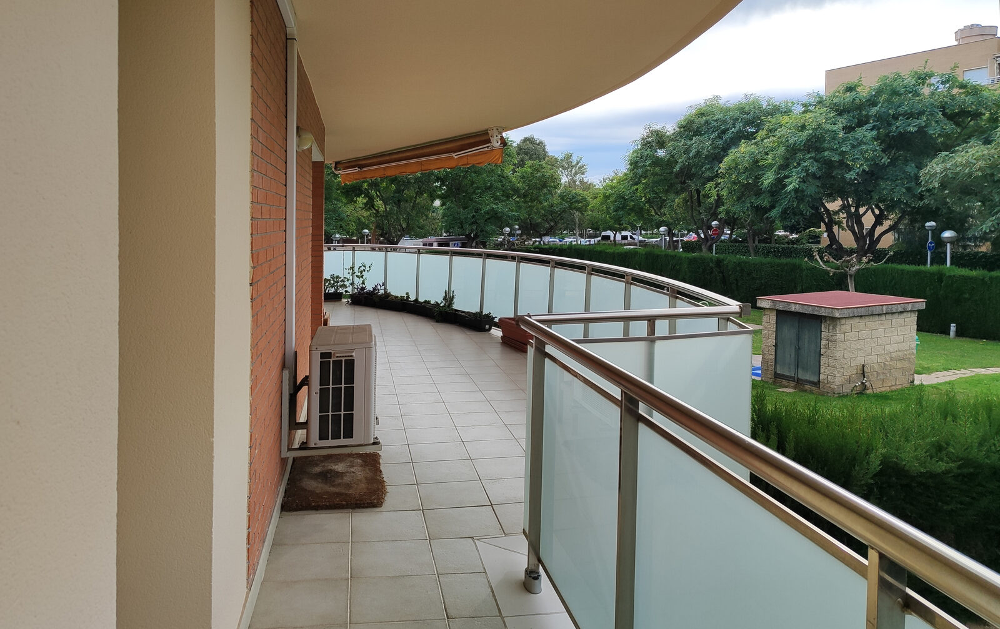
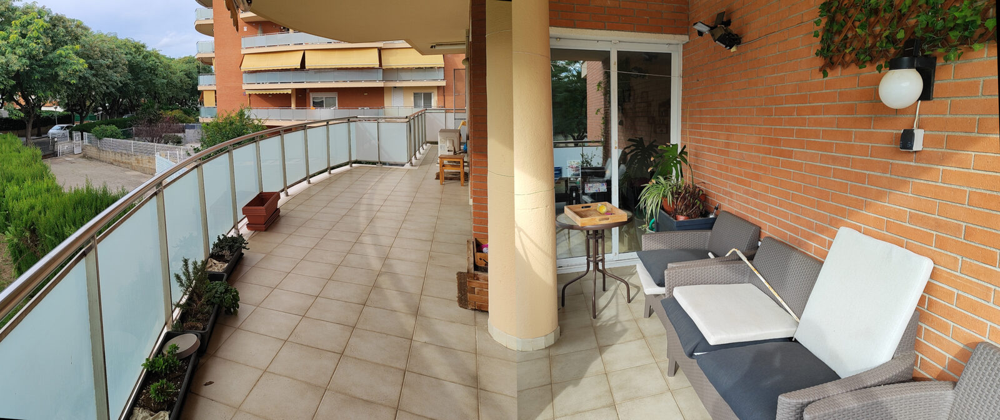
A punt per entrar a viure-hi
Les reformes que més costen ja estan fetes. Només cal portar-hi els mobles.
Cuina nova
Reformada el 2026: mobles blancs fins al sostre, forn, rentaplats i placa integrats, i sortida a l'exterior.
Suite amb bany reformat
Dormitori principal de 18 m² amb armari encastat i bany propi reformat amb dutxa de mampara. Segon bany complet per a la resta de la casa.
Pàrquing i traster
Plaça d'aparcament i traster al mateix edifici, inclosos al preu. Baixeu amb l'ascensor i ja hi sou.
Llum de sud-oest
El sol entra a la tarda pel saló i la terrassa. Un pis càlid a l'hivern i amb tendal per a l'estiu.
Piscina i jardí
Recinte residencial tancat amb jardí i piscina comunitària, just sota la terrassa.
Per a tota la família
Quatre habitacions: suite, una doble de 12 m² i dues més per a fills, convidats o despatx. Ascensor i primera planta: còmode a qualsevol edat.
Estança per estança
Toqueu qualsevol foto per veure-la gran i passar a la següent.
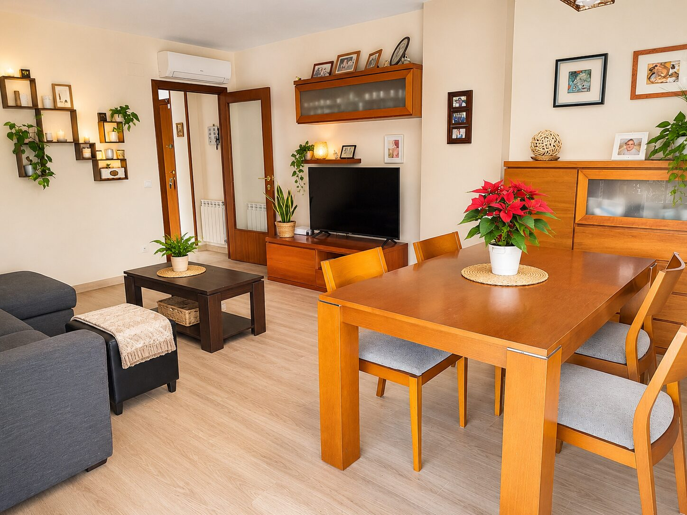
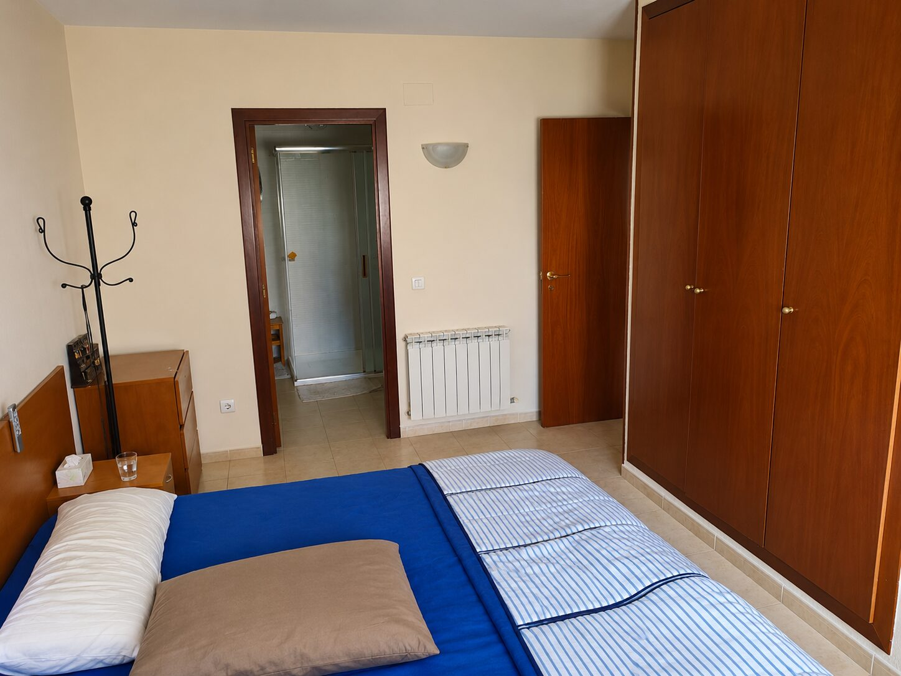
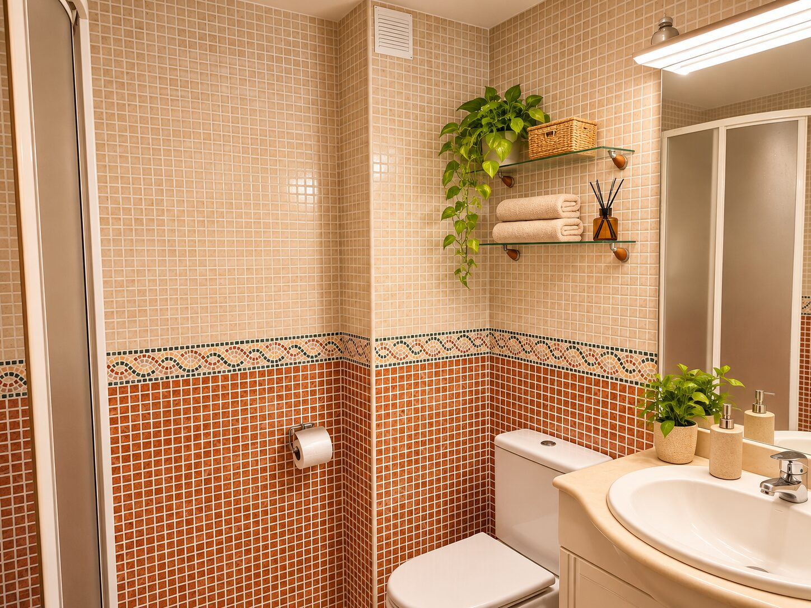
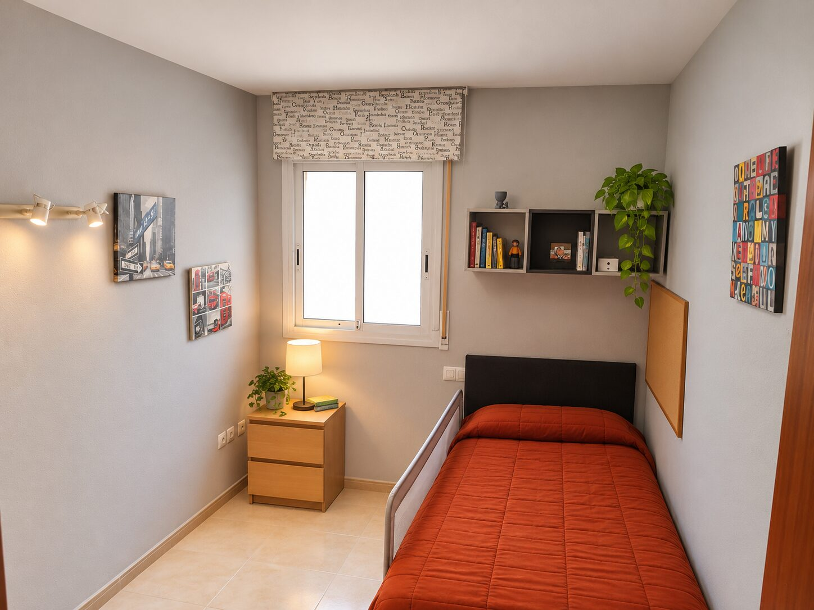
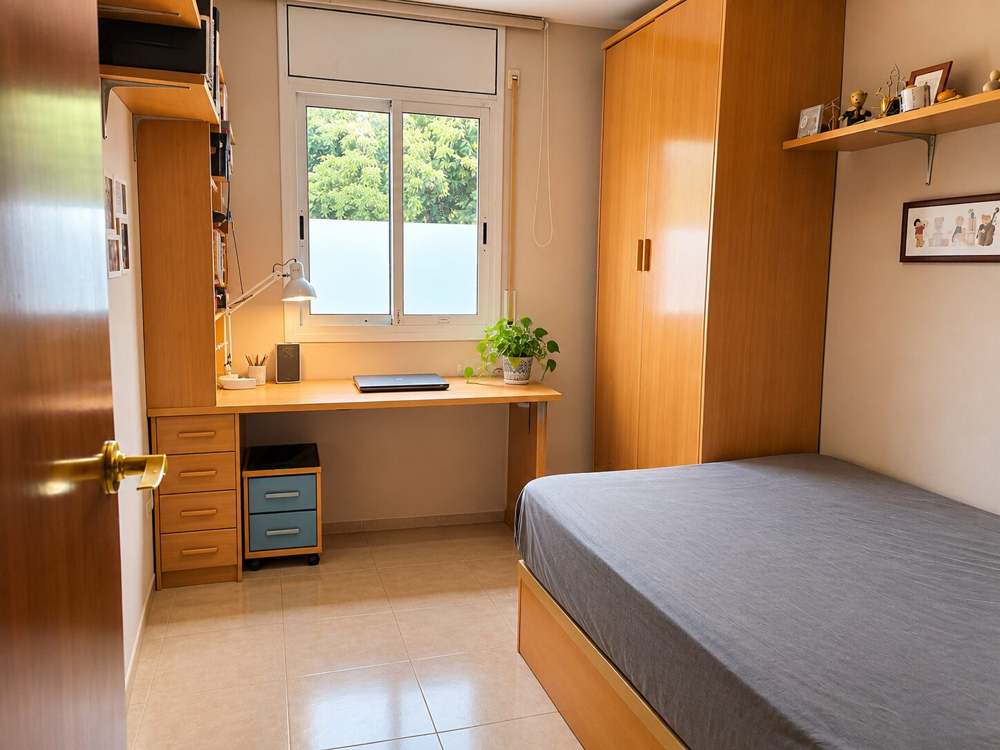
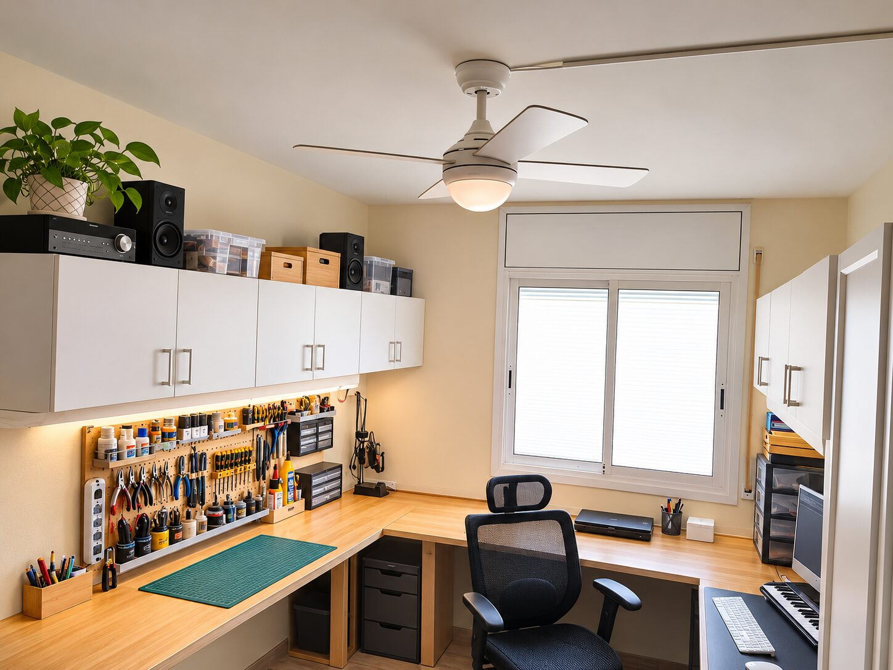
ⓘ Fotos de l'habitatge real, retocades de llum i amb alguns complements de decoració. El mobiliari es pot pactar.
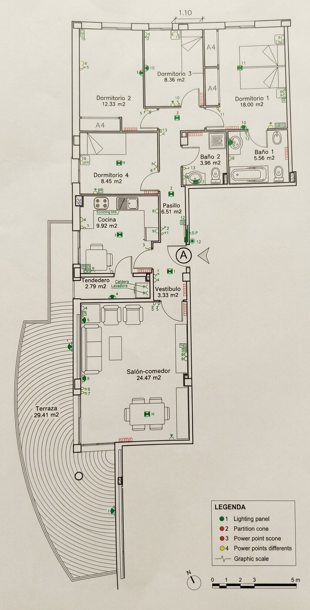
Zona de dia i zona de nit, ben separades
- Saló-menjador24,5 m²
- Terrassa29,4 m²
- Cuina amb safareig9,9 m² + 2,8 m²
- Dormitori principal (suite)18 m²
- Bany de la suite5,6 m²
- Dormitori doble12,3 m²
- Dues habitacions més8,4 i 8,5 m²
- Segon bany4 m²
- Rebedor i passadís9,8 m²
- Plaça de pàrquing i trasteral mateix edifici
Plànol orientatiu amb mobles d'exemple. 144,2 m² construïts segons escriptura.
Quant pagaríeu al mes?
Moveu els controls per fer-vos una idea de la quota mensual d'una hipoteca. És només una estimació orientativa: el vostre banc us donarà les condicions reals.
El que tothom pregunta
On és?
Al carrer de Pere Galés de Salou, en un recinte residencial tancat amb jardí i piscina, davant d'un parc públic. És una zona tranquil·la i no hotelera, al costat del CAP, de l'institut, de dos col·legis i del Teatre Auditori (TAS), amb supermercats i farmàcia a prop. La platja és a quinze minuts caminant, i el centre turístic i el passeig de Jaume I, a deu.
És una zona sorollosa a l'estiu?
No. No és zona hotelera: és un barri residencial on es viu tot l'any, prou a prop del mar per anar-hi a peu i prou lluny del bullici turístic.
El pàrquing i el traster entren al preu?
Sí. La plaça d'aparcament i el traster són al mateix edifici i formen part del pis a l'escriptura: es venen junts i estan inclosos als 430.000 €.
Cal fer-hi obres?
No. La cuina es va reformar el 2026 i el bany de la suite el 2024. El pis està a punt per entrar a viure-hi.
Quina orientació té?
Sud-oest. El saló i la terrassa reben el sol de la tarda, i la terrassa té tendal per a l'estiu.
Es ven amb mobles?
El preu és del pis sense mobles, però si us interessa quedar-vos-en alguns, ho podem pactar.
Quan estaria disponible?
A partir del desembre del 2027, però les condicions de venda es poden pactar abans d’aquesta data.
Com el puc visitar?
Poseu-vos en contacte amb la persona que us ha fet arribar aquest enllaç i us ensenyarem el pis quan us vagi bé.
Veniu a veure'l.
Les fotos expliquen molt, però la llum de la terrassa a la tarda s'ha de viure. Per concertar una visita o resoldre qualsevol dubte, parleu directament amb la persona que us ha fet arribar aquest enllaç.
Pis de 4 habitacions · Salou
- Superfície
- 144 m² construïts · terrassa de 29 m²
- Distribució
- 4 habitacions (una en suite), 2 banys, cuina amb safareig, saló-menjador
- Inclou
- Plaça de pàrquing i traster al mateix edifici
- Edifici
- 1a planta amb ascensor · recinte amb piscina i jardí
- Ubicació
- Carrer de Pere Galés, Salou · platja a 15 min a peu
- Disponible
- A partir del desembre del 2027 (condicions pactables abans)